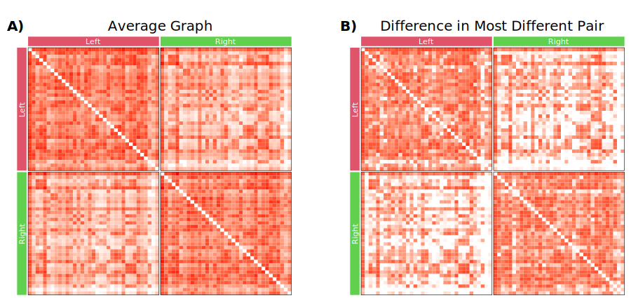

Contents
%load_ext rpy2.ipython
import numpy as np
import pandas as pd
from pkg.plot import Figure, Panel, SmartSVG, Text
from scipy.spatial.distance import squareform
from twins.data import load_dataset
%%R
myPaths <- .libPaths()
myPaths <- c("/home/j1c/R/packages", myPaths)
.libPaths(myPaths)
suppressPackageStartupMessages(library(ComplexHeatmap))
suppressPackageStartupMessages(library(circlize))
suppressPackageStartupMessages(library(extrafont))
suppressPackageStartupMessages(library(svglite))
invisible(font_import())
subjects = [
str(sub)
for sub in pd.read_csv(
"../../twins/data/subject_metadata/truncated_restricted_processed_valid_subjects.csv"
).Subject
]
df = pd.read_csv(
"../../twins/data/subject_metadata/truncated_restricted_processed_valid_subjects.csv"
)
df = df.sort_values("Subject")
df.head()
# remove singletons
uniques, counts = np.unique(df.Family_ID, return_counts=True)
singletons = []
for unique, count in zip(uniques, counts):
if count == 1:
sub = df[df.Family_ID == unique].Subject.iloc[0]
singletons.append(sub)
singleton_idx = df.Subject.isin(singletons).values
parc = "Desikan"
graphs = load_dataset(parcellation=parc, ptr=None)
graphs = {key: val for key, val in graphs.items() if key in subjects}
X = np.load(f"../../twins/notebooks/outs/1-connectome-distances/arrs/exact_{parc}.npy")
X = np.linalg.norm(X, axis=(1, 2))
average_graph = np.mean(list(graphs.values()), axis=0)
average_graph[average_graph < 1] = 0
maximum = X.max()
idx, _ = np.where(squareform(X) == maximum)
sub1 = df.iloc[idx[0]].Subject
sub2 = df.iloc[idx[1]].Subject
A1 = graphs[str(sub1)]
A2 = graphs[str(sub2)]
maximum_diff = np.abs(A1 - A2)
vmax = np.log10(np.max([maximum_diff, average_graph]))
vmin = 1
average_graph = np.log10(average_graph + 1)
maximum_diff = np.log10(maximum_diff + 1)
%%R -i average_graph -i maximum_diff
plotting.labels <- c()
for (i in 1:35){
plotting.labels <- c(plotting.labels, "L")
}
for (i in 1:35){
plotting.labels <- c(plotting.labels, "R")
}
vmax <- max(c(average_graph, maximum_diff))
# plotting.labels <- c(plotting.labels, tolower(plotting.labels))
plotting.labels <- factor(plotting.labels, levels = unique(plotting.labels))
# Make the heatmap
plot.heatmap <- function(matrix, name, save=FALSE) {
ha = HeatmapAnnotation(
foo = anno_block(
gp = gpar(fill = 2:8, col = 0),
labels = c("Left", "Right"),
labels_gp = gpar(
col = "white",
fontsize = 14,
fontfamily = "DejaVu Sans"
# fontface="bold"
)
),
height = unit(6, "mm")
)
ra = rowAnnotation(
foo = anno_block(
gp = gpar(fill = 2:8, col = 0),
labels = c("Left", "Right"),
labels_gp = gpar(
col = "white",
fontsize = 14,
fontfamily = "DejaVu Sans"
# fontface="bold"
)
),
width = unit(6, "mm")
)
if (!isFALSE(save)){
width <- 7
height <- width
svglite(paste0("./figures/", save, ".svg"), width=width, height=height)
# svg(paste0("./figures/", save, ".svg"))
}
ht <- Heatmap(
matrix = matrix,
col = colorRamp2(c(0, vmax), c("white", "red")),
border = TRUE,
rect_gp = gpar(lwd=0.0, col=0),
name = "Edge Weight",
column_title = name,
column_title_gp = gpar(fontsize = 25, fontfamily = "DejaVu Sans"),
cluster_columns = FALSE,
cluster_column_slices = FALSE,
show_column_names = FALSE,
cluster_rows = FALSE,
cluster_row_slices = FALSE,
show_row_names = FALSE,
row_title = NULL,
column_split = plotting.labels,
row_split = plotting.labels,
top_annotation = ha,
left_annotation = ra,
heatmap_width = unit(1, "npc"),
heatmap_height= unit(1, "npc"),
show_heatmap_legend = FALSE
)
draw(ht)
if (!isFALSE(save)){
dev.off()
}
}
%%R
plot.heatmap(average_graph, "Average Graph", "3a-average")
plot.heatmap(maximum_diff, "Difference in Most Different Pair", "3b-difference")
png
2
fontsize = 20
parta = SmartSVG("./figures/3a-average.svg")
parta.set_width(500)
parta.move(20, 25)
parta_panel = Panel(
parta, Text("A)", 10, 44, size=fontsize, weight="bold", font="DejaVu Sans")
)
partb = SmartSVG("./figures/3b-difference.svg")
partb.set_width(500)
partb.move(20, 25)
partb_panel = Panel(
partb, Text("B)", 10, 44, size=fontsize, weight="bold", font="DejaVu Sans")
)
partb_panel.move(parta.width * 0.95, 0)
fig = Figure(
(parta.width + partb.width) * 0.95,
(parta.height) * 0.95,
parta_panel,
partb_panel,
)
fig.save("./figures/3-composite.svg")
fig

import cairosvg
cairosvg.svg2pdf(url='./figures/3-composite.svg', write_to='./figures/3-composite.pdf')